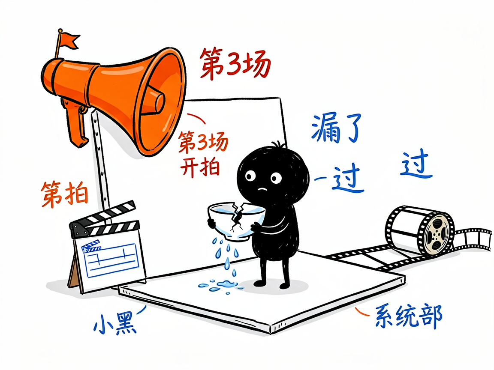

想让一个黑色小家伙帮你把文章拍成短视频？—— directing-xiaohei-videos 介绍
刷到过那种白底手绘小动画吗？一个实心黑色的小家伙，白点眼睛、细腿、表情永远淡淡的，在纯白画布上认真做一件有点傻的事——讲"信任碎了补不回来"，它就把摔碎的碗粘好，倒水给你看水从裂缝漏出来。看的人先觉得"有点怪"，一秒后突然看懂。directing-xiaohei-videos 就是让 AI 当这种视频的导演：你给主题或文章，它交一条成片。

它到底能做什么
- 一句话出片：「用小黑视频讲讲《穷爸爸富爸爸》的核心原理」，等一会儿拿到一条约 1 分钟的竖屏成片（含旁白、字幕、手写批注）。
- 全流程导演：发明隐喻构图（低科技怪机器 + 小黑动作主体）→ 拆六场分镜 → 写解说词 → 生成动画 → 免费配音 → 后期叠字 → 质检。
- 两阶段确认：先给你导演方案（分镜 + 解说词 + 批注规划），你点头才开做；改比例、改语言会自动重出方案。
- 默认全免费管线：Agnes 免费首帧图 + 免费关键帧动画 + edge-tts 免费配音，一条视频 0 元（排队约 30-45 分钟）；要 10-15 分钟快速通道可切付费兜底（约 7-13 元/条）。
怎么用
场景 1：讲一个道理 你：用小黑视频讲讲注意力是怎么被切碎的。 AI：出方案——小黑在两台机器之间来回奔跑，最后累瘫。你批准后成片。
场景 2：改编文章 你：把这篇文章做成小黑动画（附文章）。 AI：读懂挑重点，拆六场，旁白 240-270 字，交成片。
谁适合用
- 做知识区、观点类短视频的创作者。
- 有文章/笔记想视频化的写作者。
- 想要零成本批量试错的短视频玩家。
一点说明
本技能需自备免费 Agnes API key（官网免费领取）。竖屏 9:16 为默认（16:9 也可）。B 站有 demo 成片可看效果。配套 ian-xiaohei-illustrations 是它的姊妹技能（静态配图版）。